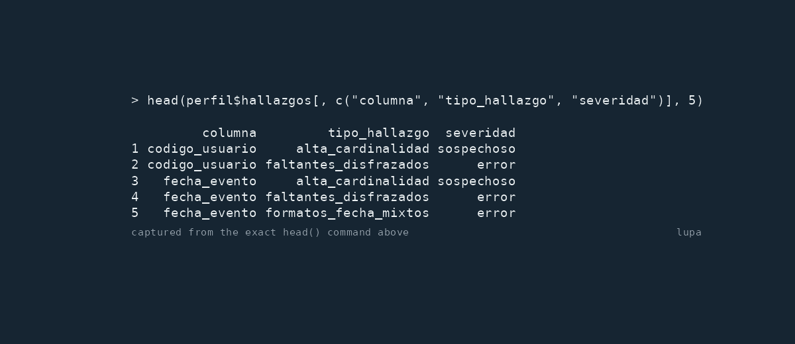

Perfilado y medición de calidad de datos auditables: cada resultado conserva su alcance y su evidencia.


🔎 Qué es y en qué se distingue
lupa es un conjunto de herramientas auditables para conectar el primer perfilado con un modelo de calidad declarado para un uso concreto, mediciones explícitas, limpieza controlada de una copia y duplicados aproximados a escala. En vez de un puntaje opaco, cada resultado conserva alcance, evidencia e incertidumbre.
Bases enteras, no una tabla sola. coleccion() declara qué tablas componen una base —con su esquema, porque el esquema es parte de la identidad de la tabla— y perfilar_coleccion() devuelve una fila por tabla más la cobertura de lo que no pudo medir. La frontera se declara, nunca se descubre: recorrer un catálogo convertiría un error de permisos en un resultado, y una colección real pasa de mil tablas repartidas en decenas de esquemas. Lo que una credencial no puede leer va a cobertura_coleccion con su motivo, nunca a cero —los permisos parciales son el caso normal, no el borde—. Y no hay lectura instantánea: cada tabla trae el momento en que se midió, y el objeto lo declara.
Contradicciones que ninguna columna muestra sola. Con senal_redundante() se declara que varias columnas codifican el mismo hecho, y detectar_discordancias() informa las filas donde no concuerdan: el año de la fecha contra el año fiscal contra el año del archivo. Cada uno de los tres puede ser plausible por su cuenta y aun así contradecir a los otros. El grupo se declara, nunca se adivina: dos columnas de año pueden ser el de nacimiento y el de ingreso, y no tienen por qué coincidir.
Hallazgos que se pueden verificar, no sólo leer. Pasale clave a perfilar() con las columnas que identifican una fila, y la trazabilidad de cada hallazgo trae esos valores para las filas que señala, así el caso se busca en el sistema de origen sin abrir la tabla. El índice de fila queda como respaldo, y trazabilidad$localizador dice cuál de los dos te tocó. Hay una tensión que el rasgo no puede ignorar: la clave que permite ir a verificar es exactamente lo que identifica a una persona, así que una columna de la clave clasificada como dato personal vuelve enmascarada, igual que la evidencia, y claves_protegidas dice cuál.
El perfilado no toca los datos. Ninguna función de análisis altera la tabla que recibe —ni sus valores, ni sus tipos, ni sus nombres, ni sus atributos—, incluidos los data.table, que R permite modificar por referencia. La única capa que produce datos distintos es la de remediación, y devuelve una copia: la tabla que pasaste sigue siendo la que tenés. Hay una prueba de regresión que lo verifica en cada punto de entrada.
🌎 Idioma de la API
Los nombres públicos están en español en ejemplos, ayuda y viñetas:
| API en español | Significado en inglés |
|---|---|
perfilar() |
profile |
analizar() |
analyse |
marco_calidad() |
quality framework |
planificar_limpieza() |
plan a cleanup |
guiar_limpieza() |
guide a cleanup |
aplicar() |
apply a selected cleanup |
medir() / tablero_calidad() / evaluar()
|
measure / dashboard / evaluate |
detectar_duplicados_aproximados() |
find approximate duplicates |
reportar() |
create a report |
El README en inglés cuenta lo mismo. Quienes contribuyan deben mantener el contrato público en español; la guía que lo rodea sí se puede internacionalizar.
⚡ Inicio en cinco minutos
Hasta la primera publicación en CRAN, instalá la versión de desarrollo desde GitHub:
# install.packages("pak")
pak::pak("sebollin/lupa")Después perfilá una tabla o ejecutá el recorrido integral:
library(lupa)
data(datos_operativos)
perfil <- perfilar(datos_operativos, analizar_dependencias = FALSE)
head(perfil$hallazgos[, c("columna", "tipo_hallazgo", "severidad")], 5)
analisis <- analizar(datos_operativos)
analisis$tablero
archivo <- tempfile(fileext = ".html")
reportar(analisis, archivo = archivo)
stopifnot(file.exists(archivo))
unlink(archivo)El perfilado es de sólo lectura: nunca cambia la tabla de entrada. Los hallazgos son data frames inspeccionables y la evidencia de datos personales se enmascara cuando la clasificación lo justifica. Abajo se ve una salida real de consola:

perfilar()
🧭 Qué se puede hacer con lupa
La referencia de pkgdown y las viñetas enlazadas son el manual detallado. Esta tabla es el mapa breve:
📐 Alcance: qué se mide sobre todo y qué se muestrea
perfilar() usa todas las filas para los conteos de tabla y columna, faltantes reales y disfrazados, valores distintos, duplicados exactos, resúmenes cuantitativos y los hallazgos derivados de esas cantidades. Por omisión, muestra = 1e5 limita el descubrimiento de patrones, la inferencia de tipos, la detección de formatos de fecha y la muestra común con que se buscan dependencias funcionales. Otro límite o Inf cambia o desactiva ese muestreo.
Los validadores de documentos personales tienen otro filtro preliminar: muestra_validadores = 1000 por omisión. Si un validador supera ese filtro se evalúa luego sobre toda la columna; Inf vuelve completo incluso el primer paso. Los duplicados aproximados están apagados por omisión y, cuando se activan, tienen sus propios límites declarados.
En detectar_duplicados_aproximados(), pares$tipo_par se describe solo: exacto significa que los textos guardados son iguales, exacto_normalizado que sólo coinciden después de la normalización declarada, y aproximado que siguen siendo similares. pares$igualo_normalizar marca el caso intermedio. Los conteos correspondientes en el alcance son n_pares_exactos, n_pares_exactos_normalizados y n_pares_aproximados.
El resultado deja el alcance efectivo en meta$muestra, meta$filas_analizadas y meta$muestreo; cada columna también publica n_filas_analizadas_tipo y muestreado_tipo_inferido, y la tabla de dependencias conserva atributos con las filas analizadas y el muestreo. analizar() reutiliza muestra = 1e5 para su perfil, distribuciones y niveles observados, y declara límites separados para asociaciones y los demás componentes.
🗄️ Motores: qué está probado y qué está esperado
perfilar_dbi() no promete un dialecto universal. Resuelve el dialecto con una sonda de cero filas antes de emitir el bloque de agregados, y lo que el motor rechaza queda declarado como no disponible con su motivo, nunca en cero.
| motor | dialecto | estado |
|---|---|---|
| SQLite | limit |
probado contra el motor real, en la suite |
motor que rechaza LIMIT
|
top / portable
|
probado con un motor simulado en la suite |
| motor que pliega los alias a mayúsculas | cualquiera | probado con un motor simulado |
motor que rechaza SELECT * por una columna |
cualquiera | probado con un motor simulado |
| PostgreSQL 16 | limit |
probado contra el motor real: dialecto resuelto por sonda, media, mediana y desvío verificados contra R, medianas múltiples consolidadas con PERCENTILE_CONT, esquemas, colecciones y permisos parciales; vuelto a probar en los cinco modos, donde la sonda elige BERNOULLI a nivel de fila antes que SYSTEM a nivel de bloque |
| MySQL 8 | limit |
probado contra el motor real: mismos tres estadísticos verificados contra R |
| SQL Server 2022 | top |
probado contra el motor real: la sonda resuelve top sola, las medianas múltiples usan PERCENTILE_CONT ... OVER, y los tres estadísticos coinciden con R |
| DuckDB 1.5 | limit |
probado contra el motor real: los cinco modos sin ninguna métrica no disponible, y los tres estadísticos verificados contra R |
| MariaDB 11 | limit |
probado contra el motor real: los cinco modos sin ninguna métrica no disponible, los tres estadísticos contra R, y el extremo inferior del plan coincidiendo con las consultas emitidas en los cinco |
| Oracle Free 23 (23c) | fetch_first |
probado contra el motor real: dialecto resuelto por sonda, los cinco modos sin ninguna métrica no disponible, los tres estadísticos contra R, el extremo inferior del plan coincidiendo con las consultas emitidas, nombres calificados por texto y por DBI::Id, y muestreo SAMPLE (p), y verificado de nuevo el 2026-08-24 contra el motor real: dialecto por sonda, las 54 métricas sin ninguna no disponible, los tres estadísticos contra R, la clave primaria leída del catálogo, y la cadena vacía declarada como nulo |
| Oracle 11 y anterior | rownum |
esperado, no comprobado contra el motor |
| cualquier otro compatible con DBI | portable |
reserva: dbSendQuery() + dbFetch(n)
|
La afirmación es reproducible: benchmark/verificar_motor.R toma cualquier conexión DBI y comprueba las seis cosas que la tabla promete — dialecto resuelto por sonda, ninguna métrica no disponible en los cinco modos, los tres estadísticos contra R, el plan contra las consultas realmente emitidas, el nombre calificado con esquema por texto y por DBI::Id, y una colección de dos tablas.
Lo que ese script comprueba es el comportamiento, y se puede rehacer contra cualquier conexión. Los cronometrajes de esas corridas —los segundos y las lecturas de fila que aparecen en las notas de versión— no se rehacen desde el repositorio: necesitan la infraestructura de la corrida, hasta dos millones de filas por cuarenta columnas sobre un motor levantado para la ocasión. Están publicados como lo que son, referencias de una corrida puntual, y ningún resultado del paquete depende de ellos.
Esperado significa que el dialecto está construido y probado contra un motor simulado que reproduce esa restricción, no que se haya corrido contra el motor real. La diferencia importa y por eso está escrita: los defectos que esta versión corrigió no aparecieron en ocho entornos verdes justamente porque todos usaban el mismo motor.
Cada motor que se agregó a esta tabla encontró un defecto que ningún motor simulado podía encontrar. El de DuckDB es el más filoso: acepta TABLESAMPLE SYSTEM (10) WHERE 1 = 0 y rechaza la misma cláusula sin el filtro, porque con un filtro trivialmente falso su parser no llega a validar el método de muestreo. La sonda de capacidad usaba justo ese filtro para salir barata, así que pasaba, y la consulta real fallaba. Una sonda que no ejercita la forma que después se emite no prueba nada — la misma lección que había dejado la sonda del desvío una ronda antes.
El dialecto se puede declarar con dialecto = si la sonda no acierta. Un fallo parcial nunca descarta lo ya medido: si la lectura de la muestra falla, el objeto vuelve con resumen_tabla completo, perfil_muestra = NULL y una fila de cobertura con el motivo. Si no se pidió la muestra, la cobertura usa no_solicitado, que no es un fallo; se puede pedir sólo los agregados con bloque_muestra = "solo_agregados".
Saber qué falta antes de chocarse
lupa tiene dos dependencias obligatorias, cli y data.table. data.table se usa únicamente para acelerar el conteo exacto de filas duplicadas, y nunca se importa al espacio de nombres; las tablas con columnas de lista o matriz, o con NaN, repliegan a la implementación de base, que es la que fija el resultado. Todo lo demás es opcional —y lo que pasaba cuando faltaba algo era un error de R, o del controlador, que no decía ni qué faltaba ni cómo conseguirlo. El caso duro no es el paquete de R sino la biblioteca del sistema que va debajo: RMariaDB no compila sin las cabeceras del cliente de MySQL o MariaDB, ROracle necesita el Instant Client de Oracle, y quien ve installation of package 'RMariaDB' had non-zero exit status no tiene forma de saber que la respuesta es libmariadb-dev.
requisitos_motor() # el catálogo entero
requisitos_motor("oracle") # qué necesita Oracle, y cómo conseguirloPor cada motor declara el paquete de R, la biblioteca del sistema con su nombre en Debian y en Fedora, la salida sin permisos de administrador cuando existe, el dialecto esperado y si está probado contra motor real. Las salidas no son hipotéticas: para SQL Server no había driver ODBC ni forma de instalarlo, y se resolvió compilando FreeTDS en un prefijo del usuario y pasándole la ruta a odbc; el Instant Client de Oracle se descomprime en una carpeta propia. Ninguna de las dos necesitó sudo.
Lo que no hace es afirmar que comprobó una biblioteca del sistema que no puede comprobar. Cuando sólo puede decir «el paquete de R no está, y si al instalarlo falla la compilación lo que falta es esto», dice exactamente eso: el invariante del paquete aplicado a su propia instalación.
Una consulta por lote, no una por columna
El perfilado emitía una consulta por columna para cada bloque de métricas. Sobre una tabla de decenas de millones de filas ése es el costo: no el muestreo, la cantidad de escaneos. Los agregados planos —COUNT(col), mínimo/máximo/ media/ceros/negativos y desvío— se piden ahora para varias columnas en una sola consulta, por lotes. COUNT(DISTINCT ...) conserva una clase separada; la moda sigue siendo una por columna porque agrupa. La mediana conserva una por columna como respaldo; cuando la sonda del motor acepta PERCENTILE_CONT(...) WITHIN GROUP, varias medianas viajan en un solo SELECT por lote.
En el modo aproximado, una cardinalidad sólo se consolida si la capacidad proporciona una expresión que se pueda incrustar en ese SELECT. Si sólo puede construir una consulta completa, válidos y distintos se emiten por separado y cada registro conserva el método de la consulta que efectivamente se ejecutó.
Medido contra PostgreSQL 16 con 2 millones de filas por 40 columnas:
| modo | antes | después |
|---|---|---|
conteos |
46 consultas, 5,4 s | 8 consultas, 2,4 s |
seguro |
128 consultas, 15,2 s | 14 consultas, 5,3 s; 10 consultas con la fusión plana |
Con las mismas 160 y 400 métricas calculadas, y con los mismos números: sobre una tabla sembrada una sola vez, el perfil consolidado y el anterior coinciden en los dieciséis campos del resumen para seis tipos de columna.
Si un lote falla, no se pierde el lote. Se sondean sus mitades por bisección: los grupos aceptados se reutilizan como mediciones y las columnas culpables se reintentan por métrica. Lo que igual falle queda no_disponible con su motivo, mientras las vecinas se calculan. Si el presupuesto se agota antes de aislar todo, las columnas pendientes quedan sin medir; no se las supone culpables ni legibles. La degradación tiene sus propios tests.
resumen_tabla$sql conserva una fila por columna y métrica con todos sus campos, y agrega lote y columnas_compartidas para que se vea cuál consulta fue compartida. También agrega id_muestra: dos métricas con el mismo valor fueron producidas por la misma consulta de datos y vieron exactamente las mismas filas. Las métricas por columna —moda, frecuencia de la moda y mediana— dejan id_muestra = NA, porque no comparten filas con otras métricas; NA declara que no hay garantía, no que se haya inventado una coincidencia.
Con instrumentar = TRUE, cada consulta suma duracion_ms y cpu_ms. El primero usa Sys.time(); el segundo suma proc.time()[c("user.self", "sys.self")] y representa el trabajo de CPU del cliente, incluida la conversión del resultado que hace el driver. Cero es medido; NA significa que no se pudo medir. instrumentar = FALSE apaga ambos relojes y deja esos campos en NA, sin alterar la consulta ni su resultado.
El total exacto (COUNT(*)) viaja en la primera consulta de agregados planos y se comparte con el recorrido que ya necesitaban. Si el lote completo es rechazado por el motor, se emite un COUNT(*) solo y se continúa con la bisección: la completitud siempre usa n_total - n_validos, nunca un total estimado. Una forma TABLESAMPLE que necesita el total para escribir un porcentaje lo cuenta antes. Los tamaños se pueden separar: tamano_lote_planos controla los agregados planos y tamano_lote_distintos las cardinalidades; este último vale 1 por omisión hasta contar con mediciones, porque una sola cardinalidad puede derramar mucho más que un lote plano.
Leer un perfil sin conocer su forma
perfilar() devuelve un perfil plano; perfilar_dbi() devuelve un contenedor. Así que perfil$general$filas funcionaba sobre uno y devolvía NULL sobre el otro, donde el conteo vive en resumen_tabla$meta$filas. Un NULL silencioso en un guion de medición es la peor forma de fallar: no avisa, y lo que sigue calcula sobre nada.
Andan sobre perfil, analisis, perfil_dbi y perfil_coleccion, y no inventan lo que no hay: un perfil DBI sin muestra leída devuelve una tabla de hallazgos vacía con su aviso, y sql_perfil() sobre un perfil en memoria devuelve NULL, porque una tabla sin filas sugeriría que se emitió SQL y no encontró nada.
Un presupuesto mide trabajo, no cuenta unidades
Un tope que cuenta unidades trata igual a una columna de códigos de diez caracteres y a una de WKT de mil. Una tabla del catálogo de PostGIS —3.912 filas— tardaba 243 segundos, y el detector de vocabulario era el 99,6 %: 800 valores distintos son 319.600 pares, muy por debajo del tope de dos millones, pero cada comparación era una Jaro-Winkler sobre 900 caracteres.
El presupuesto se mide ahora en comparaciones de carácter, que es el bucle interno de la distancia. Calibrado contra la medición, la columna patológica baja de 61,3 s a 4,6 s. Una columna corriente de dos mil valores se compara entera mientras sus valores midan menos de unos cien caracteres: el presupuesto muerde cuando L² · n(n−1)/2 supera 2e10, que para dos mil valores distintos es un largo de 101. Decir «dos mil valores se comparan enteros» sin esa condición era falso, y falso en el peor lugar: la columna de WKT de 900 caracteres que motivó el presupuesto es justo de las que sí se recortan. Lo que se recorta se declara: cuántas formas quedaron sin comparar, cuánto trabajo eran y cuál de los topes recortó.
Y cuando hay que recortar, las formas que quedan son las primeras del alfabeto, no las primeras en aparecer. Esa diferencia era un defecto, medido sobre una columna real: 45.400 nombres de calle del catálogo nacional de datos abiertos, 8.318 formas distintas. Las mismas filas daban 26 grupos de casi-duplicados en el orden en que viene el archivo, 70–85 desordenadas y 148 ordenadas. Un perfilador cuyo veredicto depende del orden de las filas está midiendo la forma física de la tabla y no los datos. Ordenando antes, los cinco órdenes dan 148 —y ordenar además deja los casi-duplicados adyacentes, así que el corte cae entre familias en vez de partirlas—.
El otro recorte, el de pares, sigue la misma regla desde la misma medición. max_resultados conserva los pares más cercanos ordenando por distancia, y entre pares empatados desempataba por posición de fila. Medido sobre 60 grupos cuyos pares internos comparten exactamente la misma distancia, con el corte en 30, cinco órdenes distintos devolvían 30 grupos cada uno sin compartir ninguno. Ahora desempata por el orden canónico de los valores, con una clave simétrica para que tampoco dependa de cuál fila quedó primera dentro del par, y los cinco órdenes devuelven exactamente los mismos grupos.
Lo que ningún orden arregla es que un corte dentro de un empate deja afuera pares igual de cercanos. Eso no se arregla: se declara. alcance trae distancia_corte, n_en_distancia_corte y corte_en_empate, y ese último no es truncado con otro nombre —da FALSE cuando el corte cae en una distancia única—.
El costo se planifica antes de pagarlo
Perfilar una tabla de 158 columnas en modo = "exacto" emite 262 consultas, y 256 de ellas escanean, ordenan o agrupan la tabla entera. La cuenta sigue a la composición y no a la cantidad de columnas: esas mismas 158 columnas, todas de texto, cuestan 172, porque una mediana pide un orden total por columna numérica. muestra no acota nada de eso —acota lo que se trae a R, no el trabajo del motor—. Así que el costo se declara y se elige (benchmark/medir_plan_ancho.R reproduce los cuatro números):
plan_perfilado_dbi(con, "tabla", modo = "muestreado") # prepara y publica un rangoEl plan da un rango de cuántas consultas va a emitir el perfilado, y lo dice en attr(plan, "supuesto"). No escanea datos para decidir el costo: lee el esquema, sondea capacidades y, con politica_costo = "por_cardinalidad", puede leer una garantía estructural o una fuente de catálogo. Nunca lanza COUNT(DISTINCT ...) sólo para despejar una duda.
El extremo inferior es total: cuando la fuente de cardinalidad es desconocida, supone que la política omite las métricas caras. El extremo superior es total_maximo —también publicado como total_lotes_rechazados después de sumar la bisección— y deja abierto el camino que las ejecuta. Si el motor rechaza lotes, se agregan hasta 2n - 1 sondas por lote de n columnas. El costo real cae entre los dos, y el plan lo declara en las dos direcciones.
La estrategia de distintos y su fuente de costo son independientes: estrategia_distintos dice si n_distintos se publica o sólo se usa para decidir, y fuente_cardinalidad_costo dice de dónde sale la proporción. Así una clave declarada puede cerrar la decisión sin emitir un COUNT(DISTINCT ...). Si la fuente es desconocida, la corrida sigue la política explícita y mide ese agregado una sola vez cuando lo necesita.
La corrida lleva el COUNT(*) exacto en el total fusionado con los agregados planos; si no hay agregados planos que puedan llevarlo, lo emite antes de la familia de distintos. El plan publica ese orden sin pagar el escaneo.
Lo que sí es una restricción dura de diseño es que esa predicción no dependa del motor: cada sonda de capacidad gasta un número fijo de consultas aunque acierte en la primera forma, porque un costo que variara por motor dejaría al usuario adivinando otra vez.
La moda y la mediana tienen una política de costo explícita. El valor por omisión es politica_costo = "todas" ("ninguna" es un alias): el paquete no elige por el usuario. Con politica_costo = "por_cardinalidad", la corrida mide validos y distintos cuando no hay una fuente exacta de catálogo; después decide por columna si se emiten moda y mediana cuando n_distintos / n_validos >= umbral_cardinalidad. El umbral por omisión es 0.95 y se puede mover en cada llamada. Cada omisión queda en resumen_tabla$sql como omitido_por_costo, con qué se omitió, por qué y cómo pedirlo de nuevo: politica_costo = "todas" o un umbral diferente. El banco reproducible benchmark/medir_politica_costo.R mide el ahorro en consultas sobre una tabla de 158 columnas.
Pero contar consultas no responde la pregunta que trae quien mira el plan: catorce consultas sobre dos millones de filas son mucho más trabajo que doscientas sobre mil. Así que el plan estima además la magnitud, en cuentas de verdad y no en un índice inventado, y la estima en dos mitades, porque el reloj no lo pone siempre el motor. La del motor son filas_leidas y ordenaciones_completas, resumidas en magnitud_motor; la del cliente son columnas_texto y pares_texto —cuántos pares de formas podría comparar en R el detector de vocabulario sobre la muestra—, resumidas en magnitud_texto. magnitud es la mayor de las dos.
Contar sólo el motor daba juicios falsos con números ciertos: una tabla del catálogo de PostGIS de 3.912 filas, con una columna de geometría guardada como texto, pedía 64.592 lecturas de fila y cero ordenaciones —magnitud "baja"— y tardaba 35 segundos ya con el presupuesto de trabajo calibrado, porque lo que quedaba estaba en comparar formas, que no es una lectura de fila. Es la misma tabla que arriba tardaba 243 segundos antes de que el presupuesto midiera trabajo en vez de contar unidades. Al imprimir el plan se ven las dos mitades, y el aviso de trabajo alto nombra las palancas para acotarlo, que no son las mismas de un lado que del otro. Es una estimación y lo dice: la del motor cuenta las filas que habría que leer si ningún índice ayudara, y la del cliente cuenta pares, cuyo costo unitario depende del largo de los valores —que el plan no conoce sin leerlos, así que con textos muy largos el tiempo real es varias veces el que sugiere la referencia—. Los números publicados no dependen de esos supuestos, así que quien no los comparta puede rehacer la cuenta.
| modo | qué hace |
|---|---|
exacto |
todas las métricas sobre la tabla entera |
seguro |
deja fuera las métricas que ordenan la columna completa |
conteos |
sólo conteos |
muestreado |
métricas sobre filas muestreadas en el motor: TABLESAMPLE donde existe, un orden pseudoaleatorio con límite donde no |
aproximado |
funciones aproximadas nativas: APPROX_COUNT_DISTINCT, PERCENTILE_CONT, approx_quantile y sus respaldos |
Toda métrica muestreada o aproximada viaja diciéndolo. estado distingue calculado, estimado y no_disponible, y cada fila lleva universo, tamano_muestra, fraccion, metodo y error_esperado —desconocido cuando el motor no documenta una cota, nunca una inventada—. El conteo de distintos tiene su propio estado, observado_muestra: la cardinalidad de una muestra no estima la cardinalidad del universo sin un estimador declarado, así que se informa por lo que es —lo visto en la muestra, con el universo al lado—. Un motor sin capacidad de muestreo no rompe: el modo degrada y lo dice en la tabla de cobertura.
Una aproximación no se etiqueta como estimada cuando su consulta no se emitió o no devolvió un valor utilizable. Si el motor no ofrece la función aproximada, el respaldo exacto conserva COUNT(DISTINCT ...) como método publicado.
🕳️ El vacío por diseño se declara, no se cuenta como defecto
Todo perfilador asume una forma de tabla. lupa asume que una fila es un hecho, que una columna es un dominio semántico y que una celda vacía debería tener un valor. La tercera es la que hace daño: una base administrativa está llena de vacíos legítimos — una vigencia abierta, un salto de patrón en una encuesta, columnas excluyentes por subtipo, un modelo entidad-atributo-valor. Contarlos como ausencia es correcto como cuenta y falso como lectura.
aplicabilidad declara, por columna, en qué filas la columna corresponde. Las filas fuera de ese universo salen de n_faltantes y prop_faltantes en vez de informarse como ausencia:
columnas_opcionales cubre el caso más simple, donde la ausencia nunca es defecto y no hay una regla que escribir. La regla declarada, el universo resultante y las filas donde la regla no se pudo evaluar quedan en cobertura_diagnosticos: un universo recortado sin constancia sería el mismo defecto al revés. Las filas cuya regla no se puede determinar se cuentan aparte, en n_aplicabilidad_indeterminada, porque no saber no es lo mismo que no corresponder.
Declarar el universo habilita además el error simétrico, que antes no tenía forma de aparecer: valor_fuera_de_aplicabilidad informa un valor presente donde la regla dice que la columna no corresponde.
La misma idea gobierna las pruebas estadísticas. Benford supone un proceso multiplicativo y los límites de Tukey suponen una distribución; una numeración —un identificador, un código— no es ninguna de las dos cosas, y que un código quede lejos de la mediana no dice nada de su calidad.
Reconocer una numeración pide dos señales, y hacen falta las dos. La primera es la densidad: un identificador ocupa un tramo compacto de los enteros y una magnitud se reparte por varios órdenes. La unicidad no sirve, porque un monto también es casi único. La segunda es la ausencia de un salto de escala, y sin ella la primera hace daño: un valor fuera de escala de hasta el doble del máximo no baja la densidad lo suficiente, así que un 120 entre edades de 18 a 70 —o un 2000 detrás de 1..1000— quedaba tapado justo cuando era lo único que había que ver. Lo que sí los delata es el hueco que abren: 50 y 1.000 donde el típico es 1.
El criterio se eligió midiendo. Un banco de trece columnas con la respuesta conocida —cinco numeraciones y ocho magnitudes con un dato malo adentro— comparó cuatro variantes: cruzar las dos señales acierta las trece y no calla ningún dato malo real; la densidad sola acertaba once y callaba dos. Está en test-ronda118.R.
Y lo que no se corre no se apaga en silencio: deja su fila en cobertura_diagnosticos con el motivo medido —qué porcentaje de los enteros cubre la columna, cuántos valores se habrían señalado, cuántas filas de cuántas trae la muestra—.
La misma idea, al revés, produce un diagnóstico que ninguna señal sola podía dar. Un 9999 puede ser una edad imposible o un código postal perfectamente válido, así que la lista de sentinelas_numericos no lo trae por omisión y hace bien: marcarlo siempre rompería cualquier columna donde ese número es un dato. Pero un valor que queda fuera de los límites, se repite y tiene forma de dígito repetido es un centinela con las tres cosas juntas, y posible_centinela_numerico lo informa sin contarlo como ausencia —eso lo decide quien conoce la columna, agregándolo a la lista—. Un código postal 9999 repetido treinta veces no es extremo en su columna; un monto real de 9999 no se repite; un año 1999 no tiene esa forma.
La unicidad no se adivina: se pregunta —y en una base, se lee. Cuando los datos vienen por DBI, la clave primaria está declarada en el catálogo del motor, así que no se sugiere nada: se lee, en una sola consulta elegida por el controlador. Y se distingue «esta tabla no declara clave» de «no se pudo preguntar», que no son lo mismo.
La unicidad no se adivina: se pregunta. Si se declara la clave con perfilar(clave = ...), que se repita entre las filas con la clave completa es un hallazgo de severidad error con las filas que repiten. Si ninguna fila tiene la clave completa, el estado es sin_casos_evaluables y no verificada: cierto sobre un conjunto vacío es cierto y engañoso a la vez. La advertencia y meta$clave separan esa comprobación de la ausencia de nulos: una clave puede no tener colisiones distintas de los ausentes y aun así no cumplir NOT NULL; si la trazabilidad agrupa esos ausentes con la semántica de R, ambas cosas quedan declaradas. Y para no dejar al usuario ante una casilla en blanco, sugerir_clave() ordena las columnas candidatas por tres señales que publica por separado —si identifica cada fila, si no tiene ausentes, y cuánto se parece su nombre al de una clave— y elegir_clave() las ofrece numeradas con una opción para escribir otra. Ordenar no es decidir: una columna única puede ser una clave o una magnitud que no repite, y esa diferencia no está en los datos.
La lectura DBI también separa catálogo y garantía. Oracle sólo se presenta como garantizado cuando STATUS es ENABLED y VALIDATED; PostgreSQL y MySQL publican estados comparables en el catálogo. MariaDB, SQL Server, SQLite y DuckDB no permiten distinguir aquí ese estado, y por eso una clave visible en ellos conserva garantía desconocida.
Donde no hay señal que discrimine, lupa habla. La cardinalidad alta de una columna de texto se informa siempre, porque el largo de los valores no distingue un catálogo de la prosa —falla en los dos sentidos, medido— y el hallazgo no afirma que sea un defecto: ofrece las tres lecturas posibles para que decida quien conoce la columna.
perfilar_por() responde al formato largo, donde una sola columna apila dominios sin relación. Perfila cada grupo por separado, descarta las columnas enteramente ausentes dentro de cada grupo antes de perfilar, y declara lo que descartó.
lupa no infiere el modelo. Pero declarar el universo exige saber que la opción existe, y quien perfilaba una tabla condicionada sin declarar nada recibía justo el informe engañoso que la declaración vino a evitar. Así que el paquete mide la evidencia y la ofrece: cuando el valor de una columna decide qué filas tienen otra, o cuando dos columnas se reparten las filas sin pisarse, posible_ausencia_estructural lo informa con severidad ok, la evidencia medida y la línea exacta que habría que escribir:
valor_a posible_ausencia_estructural ok
evidencia `tipo` predice la presencia de `valor_a` en 100.0 % de 200 filas,
con 2 valores distintos. La columna corresponde cuando tipo es "A".
sugerencia perfilar(datos, aplicabilidad = list(valor_a = ~ tipo == "A"))Sugiere; no decide, y nunca reescribe el universo por su cuenta. Las columnas ya declaradas quedan fuera del examen. Sobre veinte conjuntos reales que vienen con R y sesenta tablas al azar con ausencia independiente no produce ninguna señal; dispara en el modelo entidad-atributo-valor, en el salto de patrón de una encuesta y en las columnas excluyentes, y se calla cuando el diez por ciento de las filas rompe la regla, porque entonces la relación existe y no es una regla.
La otra cara es regla_silencia_ausencia, también ok: una columna declarada opcional o con universo propio que sigue casi vacía dentro de ese universo recibe un aviso. La declaración funcionó y por eso el perfil salió limpio; el aviso existe para que eso sea una decisión y no un efecto.
columnas_personales cierra el hueco equivalente en la otra declaración que el paquete no puede hacer solo. Ningún léxico de nombres de columna puede ser completo: una columna con documentos se puede llamar cod_benef, y ninguna lista de nombres frecuentes la va a reconocer. Lo declarado gana sobre lo inferido y no se vuelve a examinar.
La viñeta vacio-por-diseno documenta el supuesto y las seis formas de tabla donde no vale.
🔢 Unidades declaradas y trazabilidad por fila
Cada hallazgo declara la unidad de n_evaluados, n_afectados y unidad_conteo. mayusculas_inconsistentes y normalizacion_unicode usan valor_distinto: cuentan valores distintos, mientras su traza sigue siendo por fila. Enumera todas las filas que contienen un valor afectado, no sólo las filas defectuosas. casi_duplicados_vocabulario sigue el mismo contrato: su conteo es la cantidad de valores variantes y su traza enumera todas las filas cuyo valor pertenece a un grupo seleccionado, incluida la forma dominante. Por eso una traza puede tener más filas que n_afectados: esas filas sirven para revisar o unificar el grupo completo en el sistema de origen. El detector de vocabulario es heurístico; la traza es evidencia para revisar, no un veredicto de que todas esas filas deban corregirse. La traza entrega primero las formas no dominantes y después las dominantes; la evidencia declara cuántas filas mostradas pertenecen a cada grupo.
En patron_raro, resumen_patrones y la evidencia muestran como máximo seis patrones raros. La trazabilidad usa el conjunto completo de nombres de patrones raros, sin conservar su tabla de frecuencias, hasta un límite separado de 5.000 nombres. Si se alcanza ese límite, el alcance de la traza es parcial y cobertura_diagnosticos publica el límite; el tope de seis de la presentación no es por sí mismo una falta de cobertura de la traza. Cada hallazgo publica también la proporción del patrón dominante y cuántas filas quedaron en patrones no dominantes excluidos por superar umbral_patron_raro. Si ningún patrón dominante alcanza umbral_patron_dominante, no se emite un hallazgo y la no medición, su proporción observada y la forma de ajustar ese argumento quedan en cobertura_diagnosticos.
filas_duplicadas cuenta todas las filas que participan en grupos duplicados, en línea con la métrica y con la acción predeterminada que las marca. El número de excedentes queda en la evidencia. 0 significa que se midió que no había unidades afectadas; NA significa que el conteo no se midió. La misma distinción vale para la cobertura: un diagnóstico que no pudo ejecutarse queda en cobertura_diagnosticos, nunca convertido en cero en silencio.
Cuando un hallazgo y su traza no coinciden, perfilar() conserva el hallazgo y emite una advertencia de clase lupa_trazabilidad_incoherente. La guarda compara el total previo al truncado, verifica ambas direcciones y respeta la unidad declarada; es una red de diagnóstico, no un reemplazo para alinear el detector y su traza.
🛣️ ¿perfilar() o analizar()?
Usá perfilar() cuando quieras el perfil enfocado e inspeccionable: resúmenes por columna, patrones, tipos inferidos, hallazgos, cobertura de diagnósticos y relaciones estructurales no declaradas. Usá analizar() cuando necesites el recorrido alrededor de ese perfil: distribuciones, asociaciones, análisis temporal, clasificación confirmable de variables, propuesta de modelo, plan de limpieza, cobertura conceptual y tablero.
Si no recibe un modelo ni una propuesta confirmados, analizar() mide por omisión cada fila de la propuesta cuyo estado es "lista". Esa propuesta fue inferida por lupa; nadie la confirmó. medir_propuesta = FALSE conserva el recorrido descriptivo, y también se puede entregar una propuesta o modelo confirmado. La función agrega de inmediato y conserva el tablero pequeño; conservar_detalle_medicion = TRUE retiene el detalle de medición fila a fila.
Dónde viven la distribución de valores y las correlaciones. En analizar(), no en perfilar(), y la separación es deliberada: perfilar() es la pasada barata cuyo objeto uno lleva a todos lados, mientras que distribucion_valores() y detectar_asociaciones() cuestan más y devuelven tablas propias. distribucion_valores() da frecuencias y cuantiles por columna con su tope declarado y su marca de truncamiento; detectar_asociaciones() da Pearson entre numéricas —o Spearman, con metodo_numerico = "spearman", para una relación monótona que no es lineal—, más V de Cramér y eta cuadrado, y cada fila declara su método y su supuesto. Las dos están exportadas, así que se pueden llamar sueltas sin pagar el recorrido entero.
🚦 Severidades y automatización
severidad es un factor ordenado: ok < sospechoso < error.
-
okregistra una condición observada aceptable o informativa; no es una decisión adversa. -
sospechosoes evidencia que merece revisión. Es heurística o necesita contexto del dominio y no debe rechazar, reparar ni suprimir datos por sí sola. -
errorafirma que el control aplicable cruzó su criterio declarado. De los tres niveles, es el único candidato para alimentar una barrera automática adversa, después de que el proyecto acepte ese criterio y verifique el alcance.
cobertura_diagnosticos queda fuera de esa escala. Enumera controles que no se pudieron evaluar y cómo resolverlos. Una automatización debe revisarla además de buscar error: cero errores no equivale a un perfil limpio si hubo diagnósticos sin ejecutar. La limpieza siempre es explícita: aplicar() sólo cambia las acciones elegidas de un plan editable.
✨ Qué hace lupa en detalle
- Perfila una entrega y muestra faltantes, tipos, patrones, fechas y evidencia de datos personales.
- Perfila geometrías
sfy declara CRS, familias geométricas, vacíos, validez planar, dominio de coordenadas y alcance de la caja envolvente; no hace análisis espacial. - Evalúa la ley de Benford sólo cuando se cumplen sus precondiciones y registra los casos no aplicables en
cobertura_diagnosticos. - Informa
unidades_mixtasymonedas_mixtasen una columna sin convertir valores ni suponer tasas de cambio. - Informa
celdas_multivaluadassólo cuando las partes homogéneas coinciden con los patrones de la columna. - Encuentra
relacion_aritmetica_columnascomo identidades o proporciones observadas entre columnas numéricas, no como reglas del dominio. - Encuentra
relacion_orden_columnasentre columnas comparables y declara el alcance de la comparación. - Encuentra claves, relaciones, dependencias y granularidades de medición que nunca fueron declaradas.
- Informa
casi_clavecuando una columna no temporal tiene al menos 100 filas, es casi única y sus colisiones se concentran en pocos valores, que es lo que separa una clave con duplicados de un texto libre de alta cardinalidad. - Permite que cada proyecto defina su marco de calidad, sin imponer un puntaje global.
- Mide y evalúa métricas, escalas, reglas de validez y dominios referenciales explícitos.
- Produce planes de limpieza editables, aplica sólo acciones elegidas sobre una copia y conserva un registro de auditoría.
- Encuentra duplicados aproximados con teselas exactas, MinHash/LSH determinista, bloqueo, estimación previa del costo y lotes en disco.
- Repara codificación dañada en R, incluido mojibake repetido y CESU-8, y rechaza conversiones con pérdida inseguras.
- Sigue la calidad en el tiempo y crea informes HTML autocontenidos.
🧪 Evidencia, con el alcance declarado
Cada comprobación usa una unidad y una referencia declaradas diferentes. Ninguna estima una exactitud única para todo el paquete.
| Comprobación | Unidad declarada | Resultado | Se reproduce con |
|---|---|---|---|
| Pares dirty/clean de Raha | columnas que contienen al menos una celda cambiada | 26/26 recibieron al menos un hallazgo; se señalaron 8 columnas más | benchmark/medir_lupa.R |
| Controles limpios construidos | 31 tablas | 0 hallazgos de severidad error; 8 señales para revisar | test-ronda107.R |
| Registro real de sanciones | hallazgos de severidad error sobre 2.556 filas | 9/9 confirmados de manera independiente | benchmark/medir_sanciones.R |
Cada fila dice con qué se reproduce, y eso es parte de la comprobación. Esta tabla llegó a publicar tres números que nadie podía comprobar desde el repositorio: uno describía un conjunto de controles que se había reducido de 43 tablas a 31 —y el ruido de 25 señales a 8, o sea que el paquete había mejorado y el texto seguía diciendo lo viejo—, otro medía nueve defectos plantados cuyo banco no está acá, y el tercero un registro real sin script que lo bajara. El primero se volvió a medir, el segundo se sacó hasta que exista su banco, y el tercero tiene ahora el script.
En los pares de Raha la comparación dirty/clean etiqueta celdas cambiadas; no etiqueta toda propiedad observable en una columna sin cambios. La revisión manual encontró una observación apoyada en cada una de las ocho columnas adicionales: constantes, columnas duplicadas, mayúsculas inconsistentes, cadenas vacías y texto de alta cardinalidad. Por eso no informamos precisión ni recall diagnóstico a partir de Raha: 26/26 es cobertura por columna, no evidencia de que se haya identificado cada celda cambiada. benchmark/ reproduce la tabla desde las fuentes publicadas y registra las huellas exactas de los archivos usados en la corrida publicada, pero sólo cuando lupa está instalado a partir de un build de estas mismas fuentes. Desde la raíz del repositorio, reproducí esa condición y corré los scripts con:
🔍 Límites, lugar, estabilidad y referencias
No hay un puntaje de fábrica: indice_calidad() devuelve el tablero mientras el proyecto no declare pesos nombrados completos, y todo índice calculado conserva cobertura, pesos, transformaciones y universos heterogéneos. El núcleo es universal y los catálogos son enchufables; AGESIC v1.6 es una implementación de referencia, no un límite nacional. El único import obligatorio es cli. Los paquetes sugeridos habilitan capacidades acotadas: sf habilita el perfilado de geometrías; DBI aporta la interfaz de bases y RSQLite un backend para perfilar_dbi(); stringdist habilita la comparación aproximada de texto.
El trabajo que se puede paralelizar usa dos hilos por defecto, que es el tope que CRAN pide respetar. En su propia máquina puede subirlo por llamada con nucleos = 8 o para toda la sesión con options(lupa.nucleos = 8); el resultado no cambia, sólo cuánto tarda.
Dónde se ubica
skimr y DataExplorer exploran; pointblank, validate y dataquieR expresan o evalúan reglas; zoomerjoin, textreuse y reclin2 se enfocan en comparar texto o enlazar registros. calidad, mantenido por Klaus Lehmann y Ricardo Pizarro, es un eje complementario: evalúa la calidad de estimaciones de encuestas, mientras lupa evalúa los datos tabulares que producen una estimación.
La reparación de codificación sigue en R el enfoque y los datos congelados de ftfy 6.3.1, de Robyn Speer. Incluye once tablas de bytes, CESU-8, el caso Java C0 80 y cinco extensiones deliberadas documentadas en NEWS. Reproduce 159 de los 161 casos del corpus distribuido y deja intactos los 31 casos negativos. Deliberadamente no ofrece los pasos de estilo de fix_text de ftfy, como deshacer HTML, curvar comillas, normalizar ancho o normalizar Unicode: cambiar datos legítimos en silencio no es reparar.
Cita y referencias
citation("lupa")Las referencias conceptuales son Batini y Scannapieco (2016), el Marco de trabajo de AGESIC para la Gestión de la Calidad de Datos en Gobierno Digital v1.6 y ISO/IEC 25012:2008.
Estabilidad, contribuciones y licencia
La versión 0.1.0 es anterior a CRAN: la API pública puede cambiar antes de 1.0; los cambios incompatibles se anunciarán en NEWS.md y en las notas de versión, con una advertencia de deprecación previa siempre que sea viable.
Usá el issue tracker para errores, propuestas y correcciones de documentación. Los contratos estables son las unidades declaradas, el alcance, la protección y el registro de auditoría; los detalles de implementación y los tiempos de benchmark pueden cambiar entre versiones mientras esos contratos sigan siendo ciertos.
lupa se distribuye bajo la GPL-3. Consultá LICENSE.note por los datos Apache-2.0 derivados de ftfy y los datos MIT derivados de naniar.